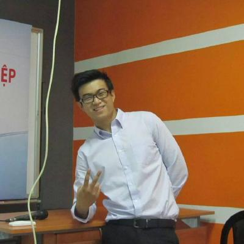
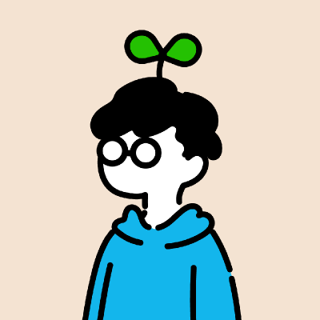
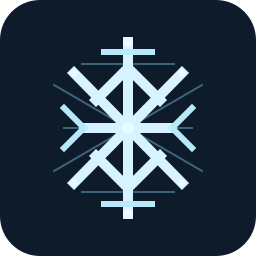

team.statement = """
"""
team.supporting =
We publish what we build for ourselves: agent harnesses, autonomous implementation runs, a self-hostable data lake, and small utilities that make life easier.
open(https://github.com/muitneliss)# See the code on GitHub
goto(members)# Meet the team
member cuongtranba:
avatar =

avatars/cuongtranba.pngname = Cuong Tran
role = Backend and agent tooling
Builds Go and Rust services with clean architecture, and the tooling around Claude Code and Codex: parallel agent teams, skill stacks, session resume, and a web UI for both CLIs.
stack = [Go, Rust, CSharp, TypeScript]# on GitHub since 2013, 124 public repos
repos = [agent-teams-setup, go-scaffolding, tinkaria, wtguard, narrated-video]
github = https://github.com/cuongtranba
site = https://trancuong.me
member thanh_dong:
avatar =

avatars/thanh-dong.pngname = thanh-dong
role = Agent harnesses and orchestration
Turns any repo into an agent-ready workspace, optimises how Claude Code routes to plugins, previews what an agent touched, and runs Symphony's autonomous implementation runs.
stack = [Rust, TypeScript, Go, Python]# on GitHub since 2015
repos = [harness-repository-cc, claude-routing-optimizer, herdr-rich-preview, magikarp_skill, read-things]
github = https://github.com/thanh-dong
member yanmad27:
avatar =avatars/yanmad27.png
name = Doan Phan (Yan)
role = Full-stack and small tools
bio = Make life easy
Full-stack engineer who ships web apps end to end and small tools that scratch an itch: a Rust window manager for Windows, a Telegram expense bot, and a Claude Code plugin that answers questions from context.
stack = [TypeScript, Go, Rust, React, NestJS]# on GitHub since 2018
repos = [windows-rectangle, ask-jev, money-note-bot, text-transporter]
github = https://github.com/yanmad27
site = https://doanphan.com
project undercroft:
mark =refs/undercroft-mark.svg
tagline = An immutable raw lake, declarative connectors, and a schema you define yourself.
Content-addressed raw storage on S3 or MinIO, YAML connectors instead of code, one generic Postgres table, and dbt models you write. Self-hostable, MIT. Pre-alpha.
tags = [TypeScript, Bun, Postgres, dbt, MinIO]
state = public
project ymir:
mark =

refs/ymir-minimal.svgtagline = A harness spec for any repo, from a Socratic interview.
Explores your codebase, interviews you per concern, and emits rules, lint, CI, wiki context, and CLAUDE.md or AGENT.md. Works with Claude Code, Cursor, and Codex via skills.sh.
tags = [TypeScript, RustCLI, agent_skill]
state = public
project symphony:
tagline = Manage the work, not the coding sessions.
Turns tracker issues into isolated, autonomous implementation runs with proof of work: CI status, PR review, walkthrough videos. Adds Claude support, GitHub Issues, and live agent logs on top of openai/symphony. Apache 2.0.
tags = [Elixir, Phoenix, Codex, Claude]
state = public
project text_transporter:
tagline = Quickly share text between devices.
Paste on one device, read on another. A small utility, kept private while it settles.
tags = [TypeScript]
repo = None# permission denied
state = private